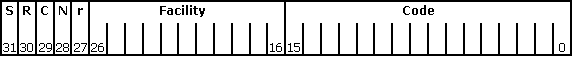

The following illustration shows the format of an HRESULT (or SCODE); the numbers indicate bit positions:

The high-order bit in the HRESULT or SCODE indicates whether the return value represents success or failure. If set to 0, SEVERITY_SUCCESS, the value indicates success. If set to 1, SEVERITY_ERROR, it indicates failure.
The R, C, N, and r bits are reserved.
The facility field indicates the system service responsible for the error. Microsoft allocates new facility codes as they become necessary. Most SCODEs and HRESULT values set the facility field to FACILITY_ITF, indicating an interface method error.
Common facility fields are described in the following table.
| Facility Field | Value | Description |
|---|---|---|
| FACILITY_DISPATCH | 2 | For late-binding IDispatch interface errors. |
| FACILITY_ITF | 4 | For most status codes returned from interface methods. The actual meaning of the error is defined by the interface. That is, two HRESULTs with exactly the same 32-bit value returned from two different interfaces might have different meanings. |
| FACILITY_NULL | 0 | For broadly applicable common status codes such as S_OK. |
| FACILITY_RPC | 1 | For status codes returned from remote procedure calls. |
| FACILITY_STORAGE | 3 | For status codes returned from IStorage or IStream method calls relating to structured storage. Status codes whose code (lower 16 bits) value is in the range of MS-DOS error codes (that is, less than 256) have the same meaning as the corresponding MS-DOS error. |
| FACILITY_WIN32 | 7 | Used to provide a means of handling error codes from functions in the Windows API as an HRESULT. Error codes in 16-bit OLE that duplicated system error codes have also been changed to FACILITY_WIN32. |
| FACILITY_WINDOWS | 8 | Used for additional error codes from Microsoft-defined interfaces. |
The code field is a unique number that is assigned to represent the error or warning.
By convention, HRESULT values generally have names in the following format: Facility_Severity_Reason.
Facility is either the facility name or some other distinguishing identifier; Severity is a single letter, S or E, that indicates whether the function call succeeded (S) or produced an error (E); and Reason is an identifier that describes the meaning of the code. For example, the status code STG_E_FILENOTFOUND indicates a storage-related error has occurred; specifically, a requested file does not exist. Status codes from FACILITY_NULL omit the Facility_ prefix.
Error codes are defined within the context of an interface implementation. Once defined, success codes cannot be changed or new success codes added. However, new failure codes can be written. Microsoft reserves the right to define new failure codes (but not success codes) for the interfaces described in FACILITY_ITF or in new facilities.